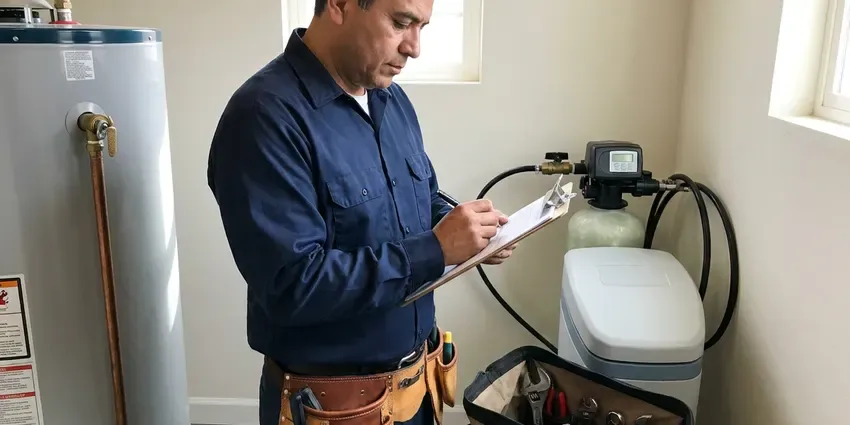
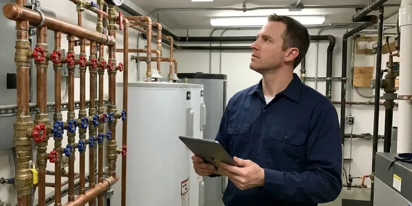
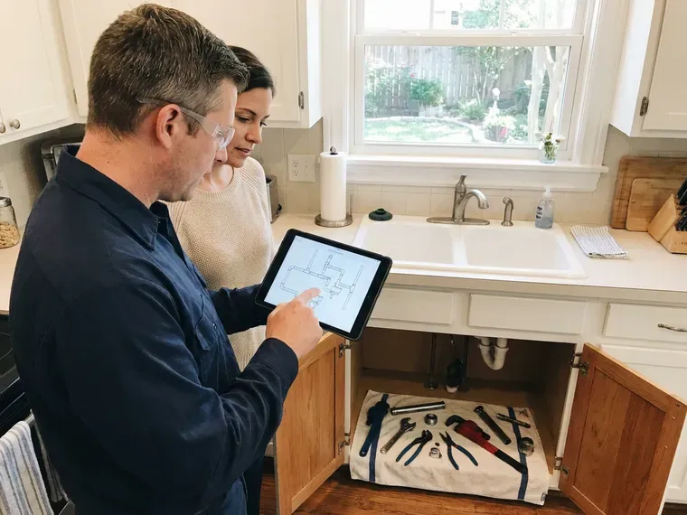
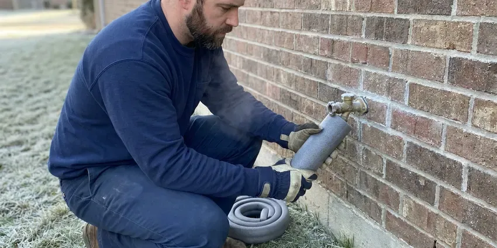
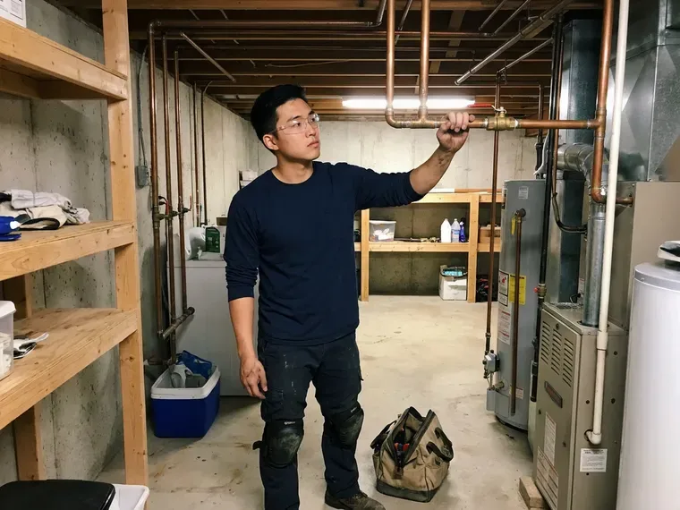

Rooter Services in Rochester, MN
CNV Plumbing clears stubborn drains and root-filled sewers in Rochester, MN, with cable and cutter sized to the line we are working on.
- Same-Day Rooter Service
- Work Guaranteed
- Price Before We Start
- Hydro Jetting Available

Drains Backing Up Again? Call Our Rooter Crew in Rochester, MN.
A rooter technician can be at your door today with augers sized for lines from 1.5 inch up to 6 inch.
Rooter Services for Rochester, MN Homes and Businesses
CNV Plumbing rooter technicians in Rochester deal with dense root balls, hardened grease and scale-crusted cast iron every week. We match cable size and cutting head to the pipe, so the line gets cleared without gouging the walls.
Some of what we do:
- Sewer camera checks to find the cause
- Root saw and spiral cutter heads for sewer lines
- High-Pressure Jetting Passes

Additional Plumbing Maintenance Services in Rochester, MN
Our maintenance and specialty plumbing services in Rochester, MN protect your home year-round and extend the life of every system.




Residential Plumbing Service in Rochester

Professional commercial plumbing, Rochester

Customers
Why Choose CNV Plumbing for Rooter Services in Rochester, MN?
Most of our rooter calls in Minnesota are repeat lines, the same sewer stopping up every year or two. The cable tells us why. Roots, grease and a sagging belly in the pipe each call for a different next step, and we say which one you have.
- Longer Between Calls, Full-diameter cutting keeps a line clear much longer than punching a hole through the clog.
- Preventive Advice, We tell you what we found on the cable so you can head off the next backup.
- Nights and Weekends, Sewers back up at bad hours. CNV Plumbing takes after-hours rooter calls.
Citywide Coverage
Rooter crews from CNV Plumbing reach every part of Rochester. Drain emergencies do not keep business hours. We keep trucks spread across the area so the closest one can reach you without crossing town.
Experienced Team
Our rooter techs spend their days clearing drains and sewers. They know how roots invade pipe joints. They also know how to cut those roots back cleanly to the pipe wall without scoring the inside of older pipe.
Safety-First Approach
Sewage carries bacteria, so our crews wear proper protective gear on every backup. Contaminated debris goes into sealed bags. Drop cloths go from the door to the drain, and anything we touch gets wiped with disinfectant.
Trusted Certified Rochester Plumbing Services Professionals
At CNV Plumbing, we take pride in licensed, certified plumbing services throughout Rochester, MN. Credentials matter in this trade. Every repair, install and maintenance visit follows strict safety and quality rules, and the plumbers doing the work carry recognized industry credentials.
Call Us Now PHCC Plumbing Contractor Recognition
PHCC Plumbing Contractor Recognition Better Business Bureau (BBB) Accreditation
Better Business Bureau (BBB) Accreditation Angi Certified Pro
Angi Certified Pro ISO 9001 Quality Management Certification
ISO 9001 Quality Management CertificationDrain and Sewer Rooting in Rochester, MN
Commercial Rooter Services in Rochester, MN
Restaurant floor drains and grease lines in Rochester, MN take a beating. CNV Plumbing roots commercial kitchen lines, restroom batteries and office stacks with machines built for 4 inch and larger pipe. Downtime costs you money. We schedule around your service hours and can set up a maintenance rotation so the line gets cut before it plugs.

Main Line Rooter Service Through Cleanouts in Rochester, MN
A cleanout is a capped pipe that gives us a straight shot into the main. From the cleanout we run cable all the way to the city tap, which clears the full length of the line. Homes without one can have a cleanout added. Running water afterward shows us the line is flowing at full rate.
Video Camera Drain Inspection in Rochester
A camera on a push rod shows the inside of the pipe in real time. For a line that keeps plugging, it ends the guesswork fast. Roots at a joint, a lost toy, a cracked hub or a low spot holding water all show up clearly on screen. You watch the monitor with us.
Commercial Rooter Service in Rochester
Restaurants, apartment buildings, schools and offices load their drains all day. We root larger mains, kitchen waste lines and floor drains with commercial machines and heavier cable than any house call would need. Maintenance plans cut emergency calls. After-hours work keeps the noise away from tenants and customers.
Kitchen Line Rooter Service in Rochester, MN
Kitchen lines clog slowly, over months, with grease, soap and food scraps that cool and harden on the pipe wall. We go in through the trap or a cleanout with a medium cable and spiral cutter. Heavy grease gets a jetting pass. The jet washes the walls clean, which keeps the line open much longer than the cable alone.
Toilet and Bathroom Rooter Service in Rochester
Toilets clog from too much paper, wipes and toys. We start with a closet auger that has a rubber sleeve to protect the porcelain. If that does not reach it, we pull the toilet and root the line below, then reset it on a new wax ring. Bathroom sinks take a lighter cable.
Preventive Drain Maintenance in Rochester, MN
Some lines need cutting on a calendar. A house with a big oak near the sewer might need rooting every 12 to 18 months. CNV Plumbing can put your Rochester, MN property on a schedule and send a reminder when the next visit comes up. Cutting a line before it stops costs less than an after-hours backup and spares you the cleanup.

Sewer Root Removal in Rochester
Roots cause more main sewer clogs than anything else on older streets. They enter through tiny gaps in clay and cast iron joints and grow into thick mats that catch everything flowing past. We cut them back with a root saw on a heavy cable. Plan on rooting every 12 to 24 months.
Local Rooter Crews Near Me in Rochester, MN
Our dispatch sends the closest truck with the right cable for your line. Kitchen sinks and 4 inch mains need different setups. Details on the phone help. A quick description of the slow drains on the phone means the tech brings what the job needs.
Neighbors in Rochester call us for the same few reasons, roots in old clay, grease in kitchen lines and wipes in the main. We have seen every version of these clogs. Each truck carries enough cable to reach from the cleanout to the street on a typical lot, plus a camera for anything unclear.
CNV Plumbing at a Glance
- Fully licensed plumbing team covering Rochester, MN
- Same-day appointments and 24/7 emergency response
- Upfront, flat-rate pricing before work begins
- 4.8-star rated by 501+ Minnesota customers
Rochester Map
Rochester Information
- Population
- 122,413
- Area codes
- 507/952/612
- Service area
- Rochester and towns within a 40 mile drive
- Nearby
- Lakeville, Apple Valley, Eagan, Burnsville
Grease, wipes and roots cause most stopped lines in Rochester, MN, and a rooter machine with the right cutter clears all three to the full pipe diameter.
Expert Services
Reach out to CNV Plumbing for honest, reliable plumbing from people who know the trade in Rochester, MN.
Our Specialized Plumbing Services in Rochester, MN
At CNV Plumbing, you get every kind of plumbing service from one company across Rochester, MN. From leak detection to full system installs, our team works fast and charges fair prices on homes and commercial properties alike. Take a look at our core services below:


Our Rooter Process in Rochester, MN
From your first call to the flow test, here is how CNV Plumbing handles rooter service in Rochester, MN.
Schedule
Call (612) 712-9569 to book rooter service. Our office asks a few questions about the problem and sends a tech to your Rochester property.
Assess
The tech checks which fixtures are affected and may run a camera to pinpoint the cause and the exact spot of the clog.
Clear It
Using drum or sectional augers, or a jetter, we clear the line to the pipe wall and restore normal flow.
Frequently Asked Questions About Rooter Services in Rochester
Rooting a sink, tub or toilet typically runs $125 to $300. Main sewer rooting through a cleanout usually runs $200 to $500. Adding a jetting pass brings the total to about $450 to $1,000, depending on line length and how much grease is in it. Nights and weekends run higher.
Clay or older cast iron lines with trees nearby usually need rooting every 12 to 24 months. Newer PVC lines may go many years without it. A camera helps set the schedule. How quickly roots return after the last cut tells us if yearly or every-other-year service fits your line.
Clearing a clog in Rochester does not need a permit. Repairs are another matter. If the camera shows broken pipe that needs a dig, a new cleanout or a sewer replacement, a plumbing permit is usually required. We pull it and schedule the inspection for you.
Slow drains, gurgling pipes and sewer smell are the early ones. Water backing up in a tub when you flush the toilet means the main line is involved. That one needs a call. Several fixtures acting up at once almost always points to a main line clog rather than a single trap under one sink.
Rental machines are easy to get, but they are dangerous in untrained hands. Cables can kink, whip and wrap around a wrist in a second. Rentals jam in pipes. Getting a rental cable stuck in clay pipe can mean digging it out, which costs far more than a rooter visit.
Not when the right cable and cutter are used at the right speed. Any cleaning tool can make cracked, crushed or rotted pipe worse. A camera check prevents surprises. With older pipe that has given trouble before, we usually film it first to see what we are working with.
Chemicals sometimes open a small hole in a hair clog, but they will not touch roots or a grease plug. They can soften old PVC glue joints and pit cast iron over time. They are dangerous to handle. A rooter cable removes the clog itself rather than eating a channel through it, so the line stays open far longer.
Drain snaking, also called augering, uses a flexible cable and cutting head to break up or pull out the clog. Hair, wipes and roots respond well to it. Jetting scours the whole pipe with high-pressure water and strips the grease, scale and sludge a cable slides past. Repeat clogs usually need jetting.
Hear From Customers Who Hired Our Plumbing Experts
Karen W.
After our third pinhole leak in copper, we stopped patching. CNV Plumbing gave us a written plan room by room and repiped the house in PEX while we stayed in it. The crew covered our floors every morning and cleaned up every night.
Repiping · Apple Valley, MNCarlos V.
Our house still had galvanized pipe, and upstairs the shower was a trickle. The crew repiped everything in PEX over three days and patched every drywall hole before they left. The pressure difference is night and day.
Repiping · Rochester, MN
Lisa C.
Water was pouring out from under the washing machine on a holiday weekend. CNV Plumbing talked me through closing the valves over the phone and had a plumber at the house within ninety minutes. It was a burst fill hose.
Emergency Plumbing · Rochester, MN
Paul B.
Our pit pump ran nonstop even in dry weather. The plumber found the check valve was stuck open, so the same water kept cycling back into the pit. New valve, new float switch, done in an hour. It runs quiet now.
Sump Pump · Bloomington, MN
Monica A.
Our water bill nearly doubled in one month with no change in how we used water. The tech checked the meter, heard the leak under the hallway with his equipment, and opened a hole about a foot square. Fixed the same day.
Slab Leak Repair · Rochester, MN
James P.
Our restaurant had a slow leak at the hand sink that was rotting the cabinet base. CNV Plumbing came in at six in the morning before prep, replaced the trap and both supply lines, and was packed up before my first cook clocked in.
Commercial Plumbing · Woodbury, MN